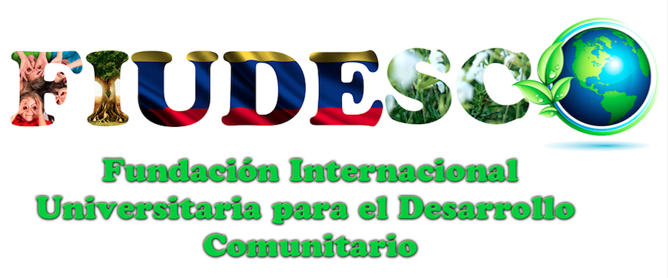
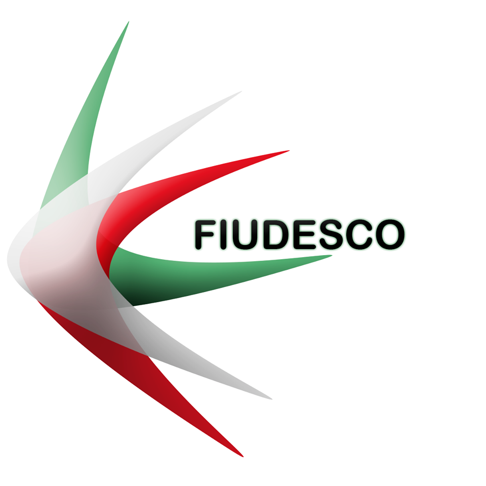

Conócenos un poco más
-
Presentación
FIUDESCO se organiza para proporcionar el desarrollo regional, nacional e internacional, dentro de un enfoque que busque promover el desarrollo integral humano y la protección del medio ambiente, mediante la acción directa o con la participación comunitaria u otras entidades gubernamentales y no gubernamentales, a través de mecanismos de asesoría, consultoría, capacitación, concertación, asociación, ejecución, interventoría e investigación
Nos organizamos para proporcionar desarrollo regional, nacional e internacional, dentro de un enfoque que busque promover el desarrollo integral humano y la protección del medio ambiente.
¿Cómo lo logramos?
Mediante nuestra acción directa, por medios comunitarios u otras entidades, sean gubernamentales o no gubernamentales, permitiendonos desplegar todos los servicios pertinentes pra el cumplimiento de nuestros objetivos.
Logo
El logo fue elaborado bajo los colores que representan a nuestra región Amazonica.

Visión
Buscar ser una fundación consolidada que haga parte activa del proceso integral humano, con otras entidades con el fin de contribuir al mejoramiento del medio ambiente y la calidad de vida de la población, brindando un servicio de investigación, capacitación y ejecución ante las entidades del orden local, seccional, regional, nacional e internacional, logrando una sociedad más comprometida y participativa en la que cada persona sea protagonista de un mundo sostenible y más justo.
Misión
Buscar ser una fundación consolidada que haga parte activa del proceso integral humano, con otras entidades con el fin de contribuir al mejoramiento del medio ambiente y la calidad de vida de la población, brindando un servicio de investigación, capacitación y ejecución ante las entidades del orden local, seccional, regional, nacional e internacional, logrando una sociedad más comprometida y participativa en la que cada persona sea protagonista de un mundo sostenible y más justo.
“Acepta la responsabilidad de hacer de tus sueños una realidad” - Les Brown